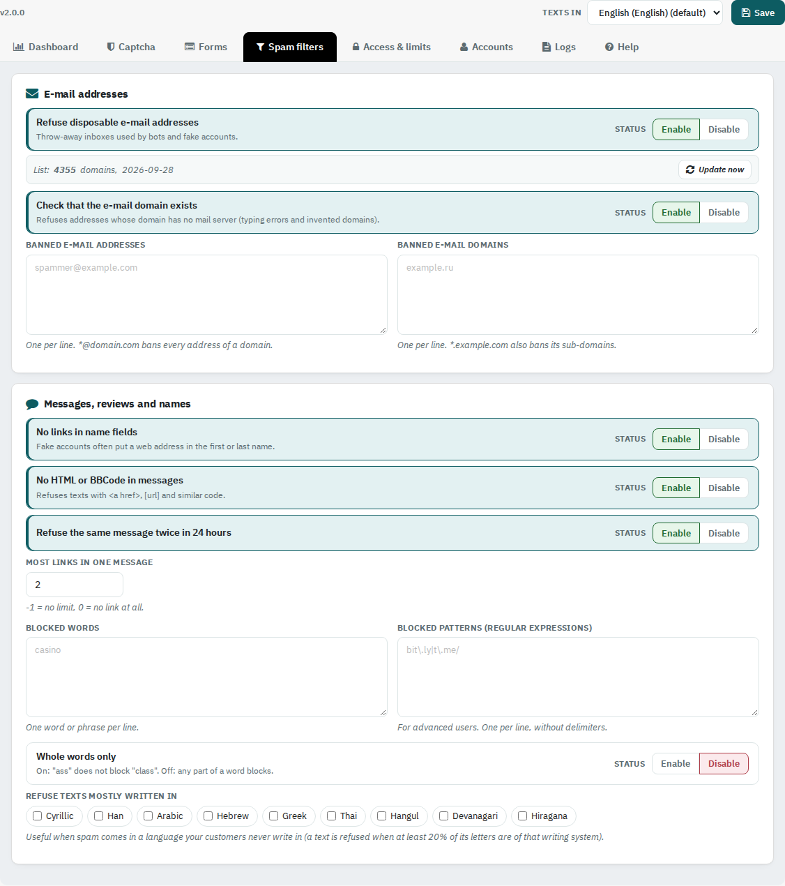

Spam filters
Refuse throw-away and invented e-mail addresses, links in names, code, blocked words and texts in writing systems you never receive.

4.1 E-mail addresses
- Refuse disposable e-mail addresses: throw-away inboxes used by bots. The list has thousands of domains; Update now downloads the latest public list (the daily task also does it every week).
- Check that the e-mail domain exists: refuses addresses whose domain has no mail server.
- Banned e-mail addresses: one per line; *@domain.com bans a whole domain. Banned e-mail domains: one per line; *.example.com also bans sub-domains.
4.2 Messages, reviews and names
- No links in name fields: fake accounts often put a web address in the first or last name.
- No HTML or BBCode in messages, Refuse the same message twice in 24 hours, Most links in one message (-1 no limit, 0 no link).
- Blocked words (one per line) with Whole words only, and Blocked patterns (regular expressions, for advanced users).
- Refuse texts mostly written in: Cyrillic, Han, Arabic, Hebrew, Greek, Thai, Hangul, Devanagari or Japanese, when spam comes in a language your customers never write in.